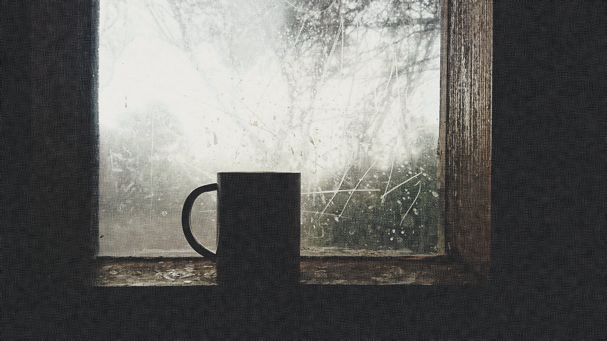
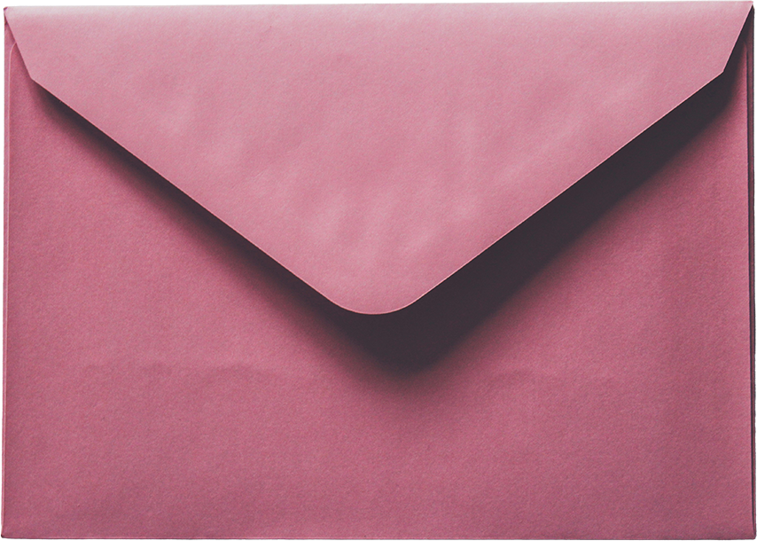

古いレコードと、冷えた缶ビール
理由もなく遠回りした帰り道。すり減ったレコードの針音が頭の中でずっと鳴っている。僕たちはどこへ向かうわけでもなく、ただ風を待っている。

遠くで電車の音が聞こえる、午後。
理由もなく遠回りした帰り道。すり減ったレコードの針音が頭の中でずっと鳴っている。僕たちはどこへ向かうわけでもなく、ただ風を待っている。
ガタンゴトンと揺れる車窓。イヤホンから漏れるメロディだけが、この世界の正しいスピードを教えてくれる気がした。
特別な約束なんてなかったのに、なぜかあの日の匂いを鮮明に思い出す。濡れたアスファルトに、不器用な優しさが溶けていく。
遠くの踏切が鳴って、濡れたアスファルトに自転車のライトがスッと伸びる。何てことのない夕方なのに、胸のあたりが妙に温かくなる。
窓ガラスを叩く雨の音。炭酸の抜けた甘い匂いと、きみが残していったマグカップ。このまま時間が止まってしまえばいいのにと思う。
ラジカセのスイッチを入れると、擦り切れたギターの音が部屋に満ちる。不器用な毎日のなかに、ほんの小さな光を見つけた気がした。
冷めたお湯と、すこし曇ったガラス窓。
日当たりの悪い場所でも、ちゃんと息をしている。
風がカーテンを揺らして、部屋の空気が入れ替わる。
用事なんかないけれど、夜のハイウェイを抜けるように、
ふと誰かに伝えたくなったとき。
